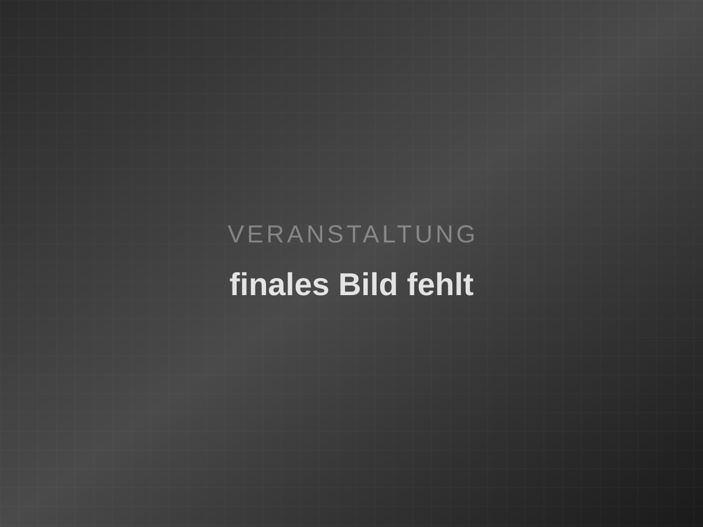

Vortrag · Nov. 2025
Winterthur als Industriestadt
Ein Abend zu Maschinenbau, Migration und dem Wandel am Lagerplatz — mit Beiträgen aus der Forschung und persönlichen Erinnerungen.
Museum Schaffen
Winterthur · Eventfrog
Alle Veranstaltungen des Historischen Vereins Winterthur — Vorträge, Führungen, Vernissagen und Diskussions-Runden in Museum Schaffen, Museum Lindengut und Schloss Mörsburg.
Zum Herunterladen und Ausdrucken — alle Anlässe ab heute bis zur letzten Veranstaltung.
Aktuell
Rückblick
Vorträge, Führungen, Vernissagen, Konzerte und Diskussions-Runden — ein Ausschnitt aus dem vielfältigen Programm des Historischen Vereins Winterthur.
Vortrag · Nov. 2025
Ein Abend zu Maschinenbau, Migration und dem Wandel am Lagerplatz — mit Beiträgen aus der Forschung und persönlichen Erinnerungen.
Museum Schaffen

Führung · Sep. 2025
Sonderführung durch Schloss Mörsburg: Baugeschichte, Alltag im Mittelalter und der Blick über die Winterthurer Landschaft.
Schloss Mörsburg

Vernissage · Mai 2025
Feierlicher Auftakt mit Kurzführungen, Gesprächen und einem ersten Blick auf Objekte aus Sammlung und Stadtgeschichte.
Museum Schaffen

Konzert · Mär. 2025
Kammermusik in historischem Ambiente: ein Konzertabend, der Raum, Klang und die Geschichte des Lindenguts zusammenbringt.
Museum Lindengut

Fest · Jan. 2025
Begegnung von Mitgliedern und Gästen zum Jahresbeginn — mit Rückblick, Ausblick und dem traditionellen Neujahrsblatt.
Historischer Verein Winterthur

Stadtspaziergang · Okt. 2024
Ein geführter Rundgang zu Gassen, Plätzen und versteckten Geschichten — für Neugierige, Familien und alle, die Winterthur neu entdecken wollen.
Winterthur Altstadt